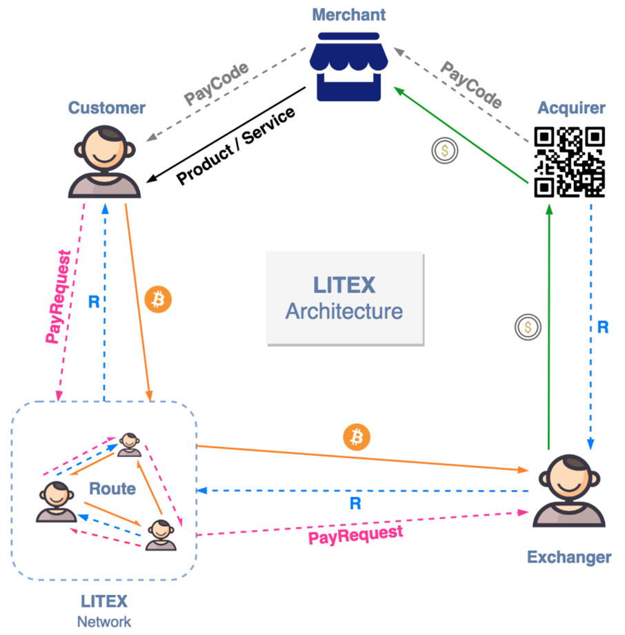
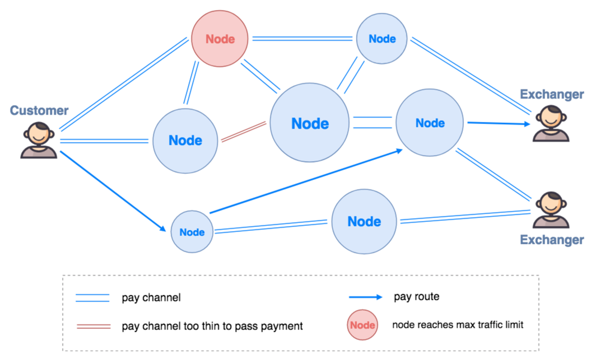
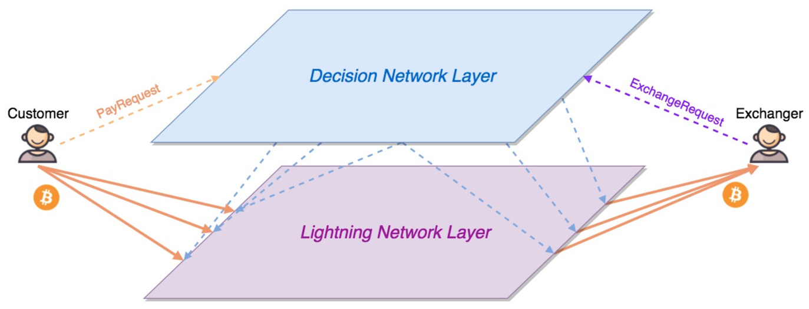

5 去中心化的支付解决方案——LITEX
5.1 概念定义
LTXN（LITEX Network）：LITEX支付生态的基础网络。以BOLT协议为基础进行定制和改进，LTXN能够让支付和购币交易自动匹配、智能路由，并通过一系列智能合约承载复杂的博弈策略，在抑制中心化结点出现的同时保持良好的连通度和响应速度，让网络拓扑结构均衡、高效。
消费者（Customer）：使用加密货币进行消费支付的用户；
购币者（Exchanger）：使用法币购买（兑换）加密货币的用户；
结点（Node）：在LTXN中提供联通性以获取手续费收益的专业个体；
收单方（Acquirer）：负责从购币者扣款并与商户法进行币结算的机构。
5.2 方案设计
5.2.1 LITEX 架构

上图为LITEX解决方案的总体架构图。实线箭头代表的是货币和产品等现实交易要素的流向，虚线代表的是LITEX系统中的数据和控制信息的流向，其中的R叫做原像，可以简单理解为一个暗语，拿到暗语的人可以向他的上游索取加密货币，这是HTLC智能合约中用以保障整个链条自动进行交易传递的机制。
LITEX生态的运转主要由两个流程驱动，主流程是消费者使用加密货币消费的过程，基本按照上图中逆时针方向运行；副流程是购币者将法币换成加密货币的过程，基本按照上图中顺时针方向运行。两个流程通过LTXN的协调得到优化的配置和联动，共同完成多种支付场景和兑换场景的需求。
在主流程中，收单方（Acquirer）在商户（Merchant）处提前布置好了收款信息，比如一个收款二维码（或者兼容Apple Pay的NFC收款装置等），消费者（Customer）通过LITEX兼容的钱包App发起一笔支付请求（PayRequest），这一请求被广播到LTXN上，通过匹配得到一个支付路由（Route），这一路由将消费者的付款请求发送给匹配程度最高的购币者，然后进入副流程，由购币者（Exchanger）用法币通过收单方扣款支付给商户，收单方确认扣款后会发送R给购币者，购币者将R发送回LTXN后就能立即获得对应金额的加密货币，最后R经LTXN反馈给消费者，消费者验证R与后将加密货币支付给LTXN中对应的下游结点，整个交易过程结束。
系统设计中满足各需求的优先级如下：
- 资金安全
确保交易资金安全是链外交易的前提，只有通过技术方案规避中心化的信任风险才是一个合格的链外交易解决方案。LTXN基于闪电网络技术，可以通过RSMC和HTLC两种智能合约确保资金安全。如果LITEX结点受到攻击导致网络无法连通，在一定时间后用户的加密货币资产也会被智能合约自动提交到主链提现，安全地回到用户的数字钱包里。
- 支付和收款体验
小额及时支付场景要求消费者能够快速、顺畅地完成支付，而商户可以方便地确认收款情况。由于加密货币价值的波动性，如果使用加密货币进行标价，消费者和商户都会陷入商品价格时刻变化的灾难中。LITEX的客户端支持输入以法币为单位的价格，在匹配引擎的辅助下确定对应的加密货币价格，消费者只需了解自己通过加密货币支付了特定法币价格的的金额即可；在商户端，商户可以选择法币实时入账，因此使用体验与其他支付网关（如Visa）并无区别，甚至在到账时间上更有优势。
- 兑换效率
系统可以对不同的兑换需求提供相应的产品方案，而具体选用哪种方案由购币者自由选择。如果购币者有稳定的兑币需求，对时效性要求不高（如可以延迟一天甚至一周到账，并可以承受币值波动带来的风险），系统可以以比较低的手续费满足这一需求；如果购币者有非常迫切地的兑币需求，系统也可以通过匹配引擎最快速度地为其匹配相应的订单，而此时购币者可能需要付出稍高的手续费。
5.2.2 LTXN概述

上图展示了LTXN中一笔支付交易与购币交易匹配后的路由情况。
在经典闪电网络中，每一个闪电网络结点都默认维护了一个对应加密货币的全结点，根据HTLC的设计，当一笔交易通过时，支付通道中的所有结点必须主动对该交易的传递进行签名。但是在实际应用中，普通用户既不可能为了小额支付而维护一个全结点，也没有精力对每一笔经过自己通道的交易进行手动签名。一种更现实的情景是，用户通过 智能手机等移动终端（无法承载全结点）对自己的支付进行签名，而在发起下一笔交易之前不会再连接支付网络。因此，依赖普通用户进行交易传递是不现实的，LTXN设计了类似各公链中矿工这种类型的专业用户——Node来提供交易传递的服务。
比特币矿工通过记录交易来赚取挖矿奖励和转账手续费收益，类似的，LTXN中的Node通过维护全结点、建立交易通道、全自动签名、保障在线率等服务赚取支付和兑换手续费，并由价格预言机确保手续费比当地交易所更低。为了确保Node提供服务的稳定性以及抑制中心化倾向，Node需要向智能合约质押一定量的Token（Token相关设计在后文详述）来获得相应金额的交易传递权，在传递交易的过程中这些Token会不断被消耗，然后由智能合约自动分配给消费者、兑换者等生态各方。由于Node质押的Token数量不同，其传递交易的能力也就不同，上图中红色的Node就因为达到传递金额上限而无法承载本次交易，被路由绕过。
根据RSMC的设计，Node之间的支付通道有大小之分，在图中表现为双线间距不同。如果一笔交易数额超过了当前通道能够传递的上限，路由也会放弃这条通路，图中红色双线就表示当前交易由于金额过大而无法通过的通道。
为了在效率、稳定、成本、拓扑等多个方面进行平衡，LTXN中还有很多具体的机制设计，包括质押体系和博弈策略等，甚至有需要对BOLT协议底层进行定制优化。限于篇幅，过于深度的技术方案会在后续的黄皮书中专门介绍。
5.3 技术创新
5.3.1 复合决策闪电网络模型
闪电网络是基于BOLT协议实现的分布式网络的统称，经典闪电网络设计只能实现加密货币的链外点对点交易，一旦涉及到法币交易的匹配就无能为力。LTXN抽象出的复合决策闪电网络通过将一个决策层网络和一个执行层网络融合到同一套分布式系统中，共用结点的同时可以做到深度联动，让闪电网络更智能，从而实现兑换请求与支付请求的匹配等高级路由功能，还可以通过规则设计让网络拓扑保持健康高效，避免出现中心化结点。
5.3.2 匹配引擎
匹配引擎是一系列分布式智能算法集合，是LTXN最复杂的核心逻辑。以下的描述大都基于系统中最简单的业务类别进行举例，不涉及具体的数据结构，也不讨论核心策略集——「非银行卡支付」业务逻辑如何应用于复杂业务处理和提升系统稳定性等细节。
LTXN系统中同时存在很多支付请求和兑换请求，其中支付请求一般有金额相对较小、即时性要求非常高的特点，兑换请求则视情况而定：有些用户为了获得较低的兑换成本，可以承受即时性比较低的兑换过程，甚至可以只设定一个上限，而在兑换的过程中按照需求随时结束兑换；另一些用户为了马上获得加密货币，可以选择支付较高的兑换手续费从而能够在很短的时间内兑换完成。实际设计中，用户需求的时效/成本比值可能介于前述两种情况之间的任意位置，我们将其用一定方式量化以作为入结点的自适应匹配决策的参考数据。
除了时效/成本的匹配，两方金额的匹配也是非常重要的一环。常见的情况是兑换请求的金额大于支付请求，LTXN各结点需要在全网匹配出复数个满足要求的请求组成最优解，需要考量的因素包括但不限于币种、金额、通道时间成本、通道传递损耗等。如果支付请求大于兑换请求，这种情况下支付额度较大，此时需要权衡的除了上述因素外，还应将主链通道的时效性和成本综合考虑，如果金额过大则建议用户进行主网支付。
最后，匹配策略同样需要考量联通性成本，如果收付两方位于互不联通的两个网络中，还需要考虑建立网间通道的成本，这些放在下面的路由部分进行讨论。
5.3.3 智能路由
闪电网络通道的建立和关闭都需要进行链上交易，会产生比较高的时间和金钱成本，因此多数情况下消费者与购币者之间不存在直接通道，而是根据HTLC合约通过中间结点进行交易传导。中间结点可能是单个结点，也可能是首尾直连的多个结点。为了能够迅速的找到最短（或者代价最低）的路径，LTXN各结点都有一套自主协商算法和结点信息缓存同步策略，以便在需求出现时以最快速度找到通路，完成交易。
闪电网络的提现操作需要关闭支付通道，这使得全网的拓扑结构时刻处于变化状态： 一方面，随时都可能有旧的通道被关闭，新的通道被打开，原本合法的通路可能因为没有及时通过而关闭，这时候就需要立即寻找新的通路；另一方面，由于每笔支付需求不同，各结点间的通道容量（可以理解为通道的直径）也会不同，除了在最初路由时将通道容量考虑在内之外，路由过程中有可能需要实时对支付进行拆分、合并操作，这些超越传统路由算法问题模型的业务逻辑需要更加细致的策略实现。
5.3.4 轻结点
按照BOLT协议，闪电网络的结点被设计为一个完整的比特币网络结点，这意味着加入网络的用户必须维护一个体积达几十GB的完整数据备份，这在实际使用中是不现实的。我们基于简易支付验证（Simplified Payment Verification，SPV）来设计LTXN的结点，并在此基础上添加了一些业务需要的数据记录，这样LTXN的结点不需要维护一个完整结点，也不需要存储整个网络中的全部用户交易，只需要存储与该结点建立通道的用户的相关交易即可。一旦通道关闭，交易在区块链主链得到确认，通道两端结点的余额就会写回主链，此时用户可以选择删除之前的交易数据来优化存储空间。优化后的LTXN结点不会占用太多的存储空间，一般的智能手机完全可以支持。
5.3.5 其他
为了实现LTXN的设计，满足小额即时支付的需求，LITEX实验室还在继续深挖闪电网络拓扑设计，并通过改进BOLT协议来完成更高效的路由方案。目前LITEX实验室正在着手编写LITEX黄皮书（即技术白皮书），随着科研和开发的不断进行，我们的技术方案也会不断进步和完善，保障LITEX生态的平稳快速发展。